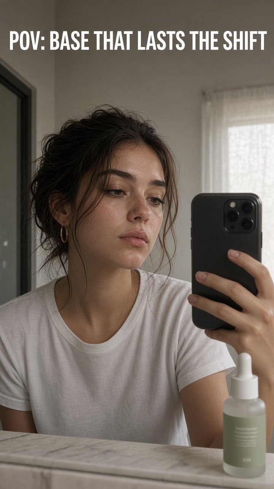
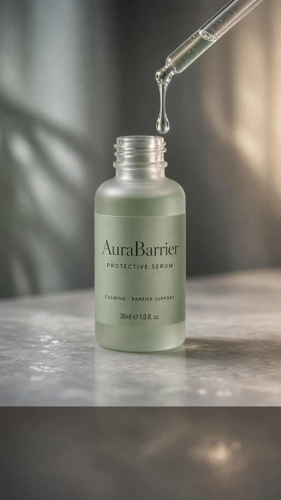
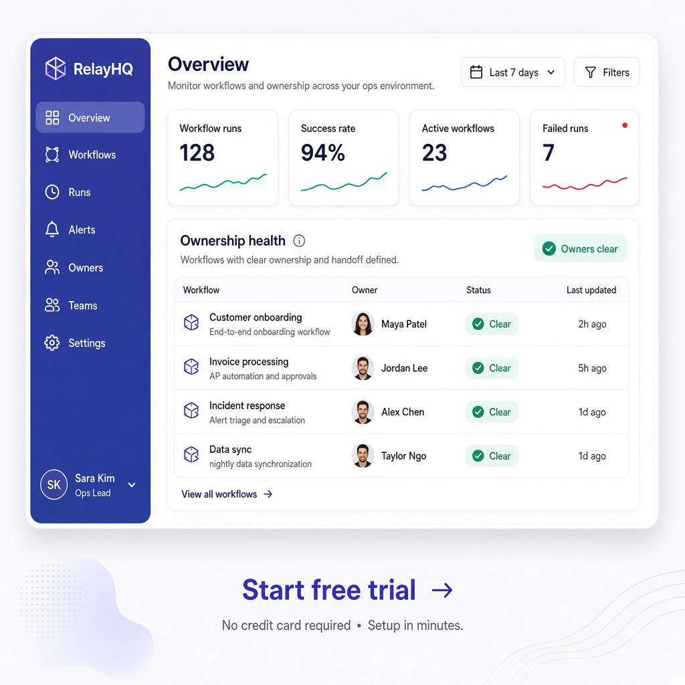
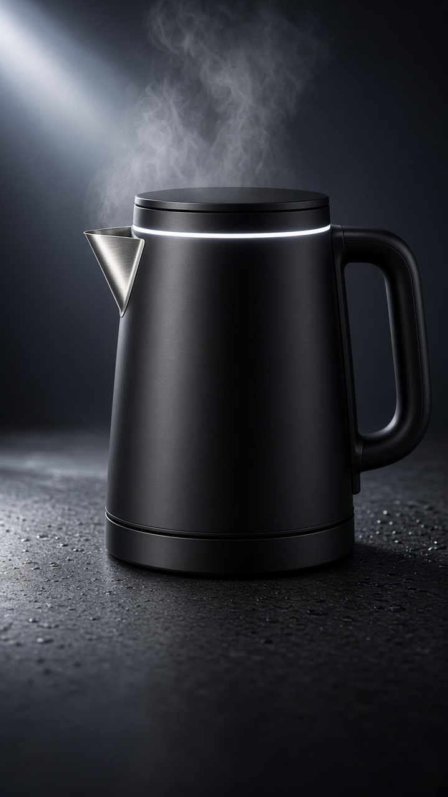
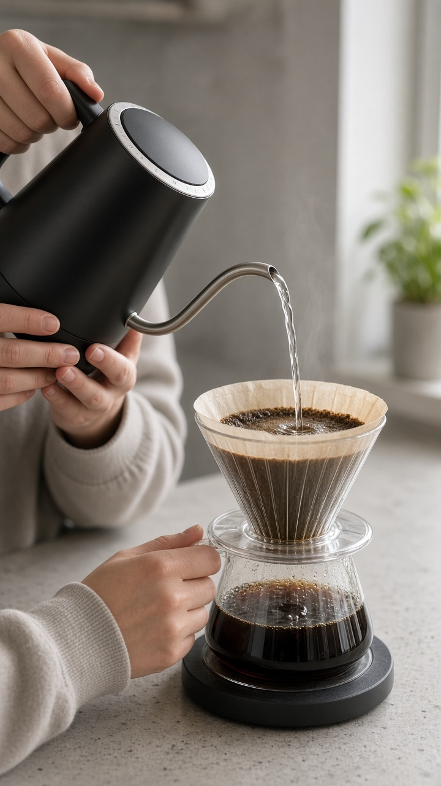

Beauty DTC — AuraBarrier
Hook identity first, then macro product lock. No clinical percentages.


Local service — Northside Plumbing
Geo + specialty before CTA. Real-place feel. Phone held as the only in-cut ask.
SaaS — RelayHQ
UI aha from real product chrome. No invented ROI.

Physical product — NestBrew
Spectacle open without logo; capability as pour feel; loop twin for social.


Slop vs skill (what changes)
Generic LLM still
- Logo or brand talk in frame 0
- Invented “94% agree” / fake stars
- Pack morphs or wrong colorway
- Shop + follow + comment together
- Pretty prose, no timed beats
Ad Intelligence package
- Pattern interrupt / POV / geo first
- Claim ledger + [PLACEHOLDER]
- Sheets + render-plan ref binds
- Exactly one primary CTA
- Lint-clean markdown + these frames
Open the packages
Markdown sources: beauty · local · saas · physical · Human proof: PROOF.md